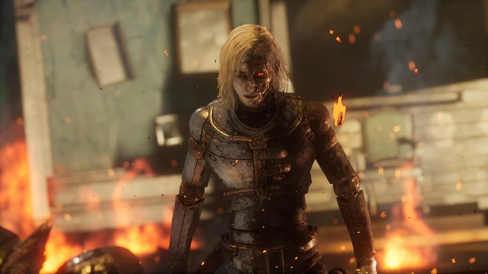

King of Puppets
The Ruler of the Grand Exhibition
Hidden behind elegance and theatrical performances, the King of Puppets controls the chaos spreading across Krat. This terrifying boss reveals the darker truth behind the puppet frenzy and introduces one of the most iconic battles in Lies of P.
Personal Experience
So far, one of the hardest bosses I defeated in the game. I almost dropped the game on his fight, after I win his first phase I thought it had ended, but it was so far from over. His second phase is even more challenging. Fast and aggressive, the Puppet who was controlling the King, Romeo.
His patterns are so hard to read, and his attacks are so fast that I had to learn them the hard way, by dying a lot. But after a lot of tries, I finally defeated him, and it was one of the most satisfying moments in the game, that made me continue playing and finish the game.
Combat Information
- Type: Puppet
- Weakness: Electric Blitz
- Location: Estella Opera House